Optimise LLM Inference Throughput from First Principles (Part I)
This article explores why the most intuitive lever for throughput, batching concurrent requests, is so effective at improving inference throughput. By dissecting the underlying computations of a transformer during inference on a single GPU setup, this article aims to establish a rigorous mental model of the LLM inference workload. This serves as a foundational step toward building a full inference cost model, allowing us to predict token throughput for a given model and hardware before deployment, which we will conclude at the end of this blog series.
1. Lifetime of a prompt
In inference, a prompt goes through two stages: prefill and decode. Prefill is a single forward pass that processes all the prompt's tokens in parallel and produces the first output token. Decode then generates each subsequent output token one by one — one forward pass per token.
In the diagram below, all the orange tokens are processed in a single prefill forward pass to produce the first blue token ("jumps"). The K and V vectors are cached as they're computed,For the motivation behind KV caching, see this primer. The short version: attention re-reads every previous K and V at every step, so caching them turns an O(N²) recompute into an O(N) read. so every subsequent forward pass only has to operate on a single token — the latest output token.
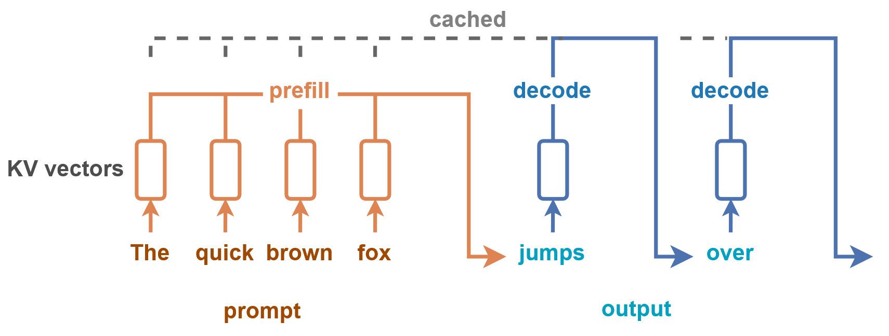
These two stages have contrasting performance characteristics: prefill is compute-bound, decode is memory-bound. To see why, let's look at what actually happens inside a transformer layer.
What one forward pass does
The computation graph of a transformer LM starts with token embedding, then a stack of transformer layers (each contains one attention and one MLP layer), and finishes with an unembedding projection into the final probablity distribution over the vocabulary called logits.
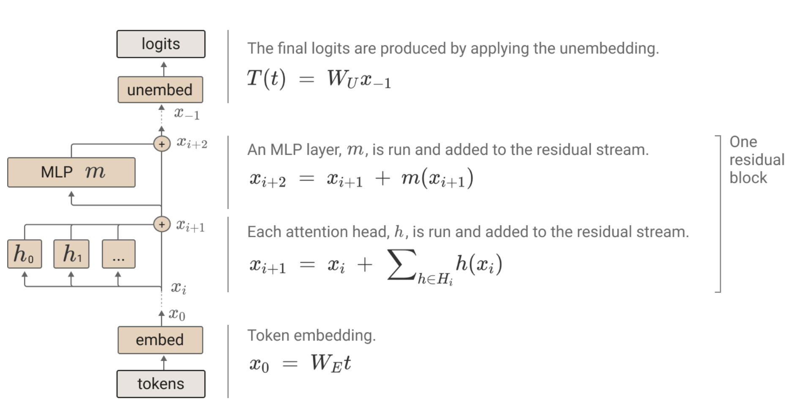
The key architectural feature for our purposes is the residual stream running across every layer. It has the same dimension everywhere — starting as the input embedding (at x₀ in the diagram) and ending as the input to the unembedding layer. Attention and MLP layers are best understood as transformations on the stream: each one reads the stream, computes something, and adds its result back. You can think of the residual stream as embedding vectors of tokens being updated over time.3Blue1Brown has a nice visualisation of this on YouTube: each token's vector is gradually rewritten by successive layers as more context flows in.
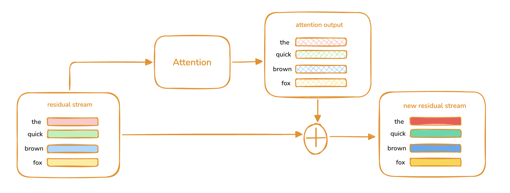
The final logits are produced by applying the unembedding only to the residual stream of the last token.
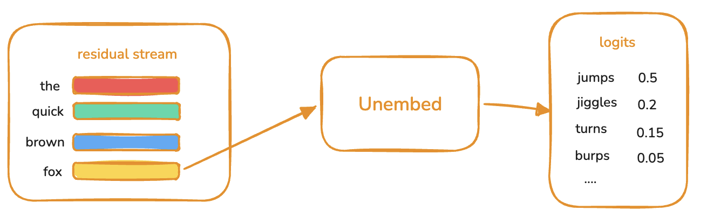
Together with KV cache mechanism, this means decode only has to process one token in its forward pass, while prefill processes all input tokens at once. That alone is the first heuristic for why prefill is compute-bound while decode is memory-bound.
Let's actually compare the number of arithmetic operations in prefill vs decode to ground this heuristic.
Prefill is compute-bound, decode is memory-bound
This section will calculate the arithmetic intensity (number of arith operations / number of memory transfer in bytes) of prefill and decode and draw a roofline model on A100 GPU. Let's start by counting the floating-point operations FLOPs not to be confused with FLOPS, which is FLOPs per second. (the main arithmetic operations in transformer) in one transformer layer for a concrete model: Qwen3-32B. Here is the configuration of the model:
d_model / hidden_size = 5120
d_ff / intermediate = 25600
n_layers = 64
n_heads = 64
n_kv_heads = 8 (Grouped Query Attention)
d_head = 128
d_q_total = n_heads × d_head = 8192
d_kv_total = n_kv_heads × d_head = 1024
dtype = bf16 = 2 bytes/param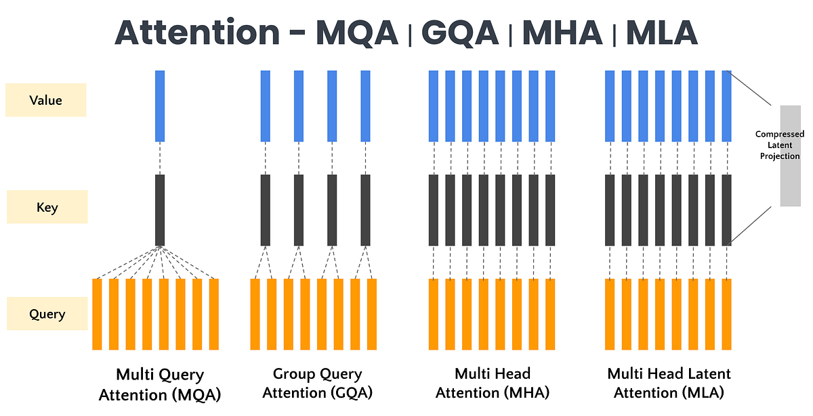
Qwen3 uses GQA, which reduces the number of KV heads by assigning each KV head to a group of query heads. For Qwen3-32B, each KV head is shared across 64 / 8 = 8 query heads.
At 32B parameters × 2 bytes, the model is ~64 GB. Spread over 64 layers, one layer of weights is ~1 GB — keep that number, it's the denominator of every arithmetic-intensity calculation below.
The one rule everything reduces to
A matmul between two matrices [M, K] @ [K, N] produces output matrix of size [M, N] and costs 2 × K × M × N FLOPs. This is because each of the M × N output entries is an inner product over K (K multiplies and K-1 adds), which combines into the 2 × K term. Every estimate below is an instance of this rule.
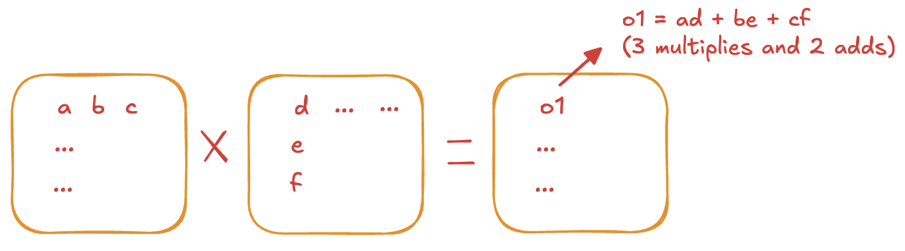
Attention FLOPs
The attention layer breaks down into two main matmul groups: projections (Q, K, V, O) and attention score computation. The residual stream x is projected into Q, K, V via matmuls, attention scores are computed per head, the per-head outputs are concatenated, and the result is projected back to the residual stream via O.
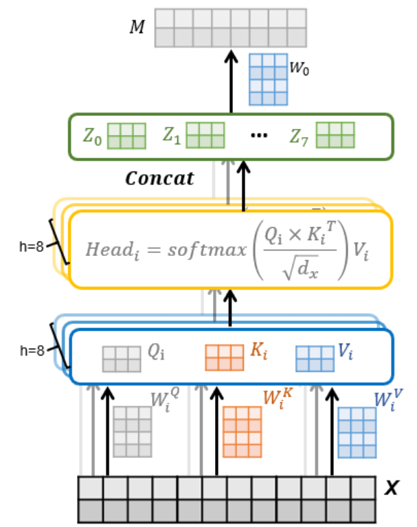
The diagram below is a handy reference for the matrix dimensions involved in the following FLOPs calculation.
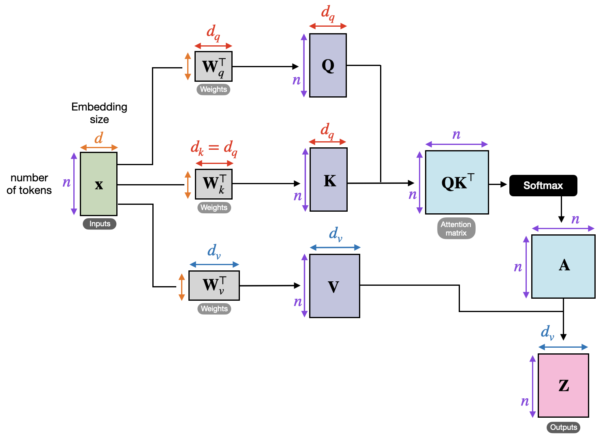
Attention projections (Q, K, V, O)
Each projection is a matmul of dimension [N , d_model] @ [d_model, d_head]N is the number of tokens. A prompt of 4096 token is used as input for this example., costing 2 × d_model × N × d_head = 2 × 5120 × N × 128 FLOPs per head. Total FLOPs scale with the number of heads — and under GQA, the number of Q heads and KV heads differs, so each has to be counted separately:
Q : 2 × 5120 × N × 128 × 64 (64 query heads)
K : 2 × 5120 × N × 128 × 8 (8 kv heads)
V : 2 × 5120 × N × 128 × 8 (8 kv heads)
O : 2 × 5120 × N × 128 × 64 (output projection)For prefill (N = 4096): 343.6 B + 43.0 B + 43.0 B + 343.6 B ≈ 0.77 T FLOPs.
For decode (N = 1) ≈ 0.19 B FLOPs.
Attention scores
Prefill: N queries attend over N keys and values. Per query head:
Q @ K^T : [N, d_head] @ [d_head, N] → 2 × N² × d_head
softmax @ V : [N, N] @ [N, d_head] → 2 × N² × d_head
Total : 4 × N² × d_headAcross 64 query heads, total FLOPs = 4 × N² × 128 × 64Notice FLOPs of attention score grows quadratically with number of tokens in prefill.. For N = 4096: 4 × 4096² × 128 × 64 ≈ 0.55 T FLOPs.
Decode: One new query attends over N_cache cached keys and values. Per query head:
Q @ K^T : [1, d_head] @ [d_head, N_cache] → 2 × N_cache × d_head
softmax @ V : [1, N_cache] @ [N_cache, d_head] → 2 × N_cache × d_head
Total : 4 × N_cache × d_headAcross 64 query heads, total FLOPs = 4 × N_cache × 128 × 64. For N_cache = 4096: 4 × 4096 × 128 × 64 ≈ 0.13 B FLOPs.
MLP FLOPs
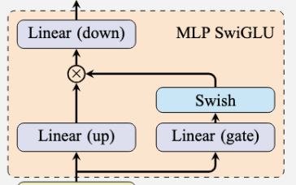
Qwen3's MLP has three dense layers — gate, up, and down — wired up as SwiGLU. The output is:
Gate: [N, d_model] @ [d_model, d_ff] → 2 × N × d_model × d_ff
Up : [N, d_model] @ [d_model, d_ff] → 2 × N × d_model × d_ff
Down: [N, d_ff ] @ [d_ff, d_model] → 2 × N × d_ff × d_model
Total : 6 × N × d_model × d_ffPrefill (N = 4096) ≈ 3.2 T FLOPs; Decode (N = 1) ≈ 0.79 B FLOPs. The SiLU (Swish) and the elementwise gate × up product are O(N × d_ff) — negligible compared to the matmuls, so they're left out.
Putting the per-stage numbers together
Decode, 1 token, N_cache = 4096, one layer:
Prefill, S = 4096 tokens, one layer:
In this simplified calculation, memory transfer does not take into account KV cache transfer in decode which would further decrease its arithmetic intensity. Section 3 will discuss the size of KV cache in more details.
An A100 GPU has ~2 TB/s HBM bandwidth and ~312 TFLOP/s for bf16 compute. The roofline crossover — the point at which a kernel flips from memory-bound to compute-bound — sits at 312 / 2 = 156 FLOPs/byte.
Decode has arithmetic intensity of ~1, making it massively memory-bound, compute cores almost idle, the whole step bottlenecked on streaming 1 GB of weights from HBM. On the other hand, prefill lands at ~4500, well above 156, making it solidly compute-bound.
So how can we increase the arithmetic intensity of decode to better utilise GPU compute? The next section will explain the solution.
The MLP dominates either way
As a final note, whether the bottleneck is memory (decode) or compute (prefill), the dominant cost on that axis is the MLP. Attention stays comparatively cheap until the context grows long — the quadratic N² attention term in prefill only overtakes the linear projection term around N ≈ 6K for these dimensions, well past the 4K we're using here.
| Projections | Attention | MLP | MLP share | |
|---|---|---|---|---|
| Decode (N = 1) | 0.19 B | ~0.13 B | 0.79 B | ~71% |
| Prefill (N = 4096) | 0.77 T | 0.55 T | 3.2 T | ~71% |
2. Batching behaviour of the inference system
We have established that decode stage of inference drastically underutilised GPU compute. Naturally, the foremost solution is to add more concurrent decode tokens, which comes from adding more concurrent input prompts. How does running multiple concurrent input prompts actually work?
Suppose the GPU has capacity to process at most 10 tokens in parallel at one time. In step 0 of the figure below, three prompts are prefilled and the token budget is fully occupied (GPU utilisation at 100%). By step 3, all three have transitioned to decode and the GPU utilisation falls to 30%. Imagine starting with 10 concurrent prompts, GPU utilisation will always be 100% and throughput (tokens per second) remains highAverage Time to First Token might take longer as there are more prefills..
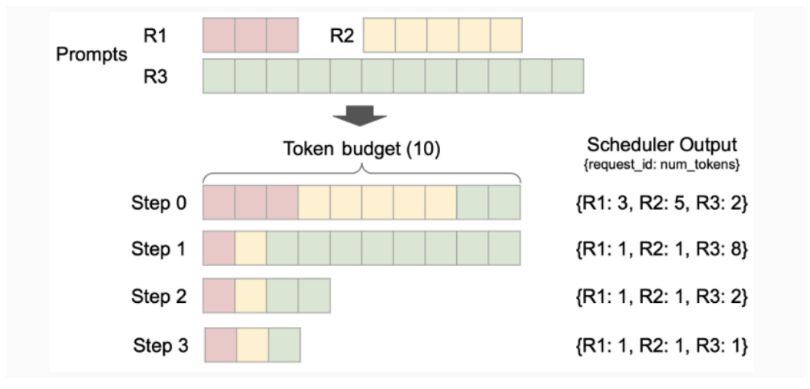
Throughput scaling
In general, prefill throughput is essentially flat with concurrency / batch size Batch Size / Concurrency / Concurrent Requests all refer to the number of concurrent prompts. as a single long prefill already saturates compute, while decode throughput scales close to linearly with concurrency. As such, to increase the overall inference throughput, we just need to increase concurrency.
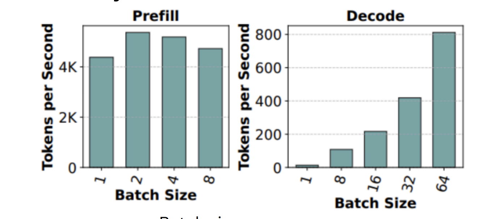
First principle of throughput optimisation: increase concurrency until compute or memory is saturated.
How to know when compute or memory is saturated?
Continue with the example workload from Section 1, the roofline crossover sits at 156 FLOP/byte and decode arithmetic intensity is ~1.1 FLOP/byte per token. Therefore, the theoretical maximum batch size before compute saturates is therefore 156 / 1.1 ≈ 141 concurrent requests. Memory will be saturated by the growing KV caches from more concurrent requests. This begs the question of whether memory or compute is the bottleneck?
3. The memory wall: KV cache sizing
In the previous section, we determined the compute ceiling of running Qwen3-32B on one A100 GPU sits at ~141 concurrent requests. But in practice, you almost never get there as the GPU runs out of memory for the KV cache first.
KV cache memory formula
The cache stores one K vector and one V vector, each of dimension n_kv_heads × d_head for every token of the prompt (both input and output tokens).
KV_cache_bytes_per_token = 2 (K and V) × n_layers × n_kv_heads × d_head × dtype_bytesFor Qwen3-32B (n_layers = 64, n_kv_heads = 8, d_head = 128, bf16):
KV_cache_bytes_per_token = 2 × 64 × 8 × 128 × 2 ≈ 256 KB / tokenA 4096-token context is therefore ~1 GB of KV cache. A batch of 141 such requests would be ~141 GB which is larger than a single A100's HBM. And this is with GQA shrinking the cache 8× compared to full MHAThere has been mutliple optimisation techniques for KV caches such as DeepSeek's MLA — which compresses K and V into a small latent vector for KV cache storage and only expands them at attention time or FP8 KV cache quantisation: https://vllm.ai/blog/2026-05-11-turboquant..
Memory budget on a single GPU
Sizing the KV cache pool comes down to subtracting everything else from total HBMActivation buffers store the intermediary outputs of each operation in a forward pass before it gets passed into the next operation. It is set as the peak activation which is often the output of the MLP layer. For Qwen3-32B, the peak activation would be of size 2x[B, N, d_ff] for the output of gate and up projections.:
What's left over for the KV cache pool on an 80 GB A100 is roughly 13 GB — enough for about 13 concurrent requests at 4K context. Comparing this to the compute-saturation ceiling (~141 requests) makes the asymmetry vivid: the memory wall arrives an order of magnitude before the compute wall.
4. Profiling and tuning
We have established the key conceptual foundations of LLM inference. This section discusses practical details when optimising throughput using vLLM.
vLLM exposes kv_cache_usage_pct as a live metric. Because KV cache usage is roughly linear in concurrent request count (assuming similar context lengths), it's a clean knob: tune max_num_seqs (max number of concurrent requests) to land at whatever steady-state utilisation you want. 85–90% is a reasonable target — high enough to push throughput, with slack for transient spikes.
The following run sweeps concurrency on a real serving config. At concurrency 512 (brown line), KV cache averages ~30% — plenty of headroom. Doubling to 1028 (green) doubles cache usage to ~60% and decode throughput roughly doubles in turn, exactly the linear scaling discussed in Section 2.
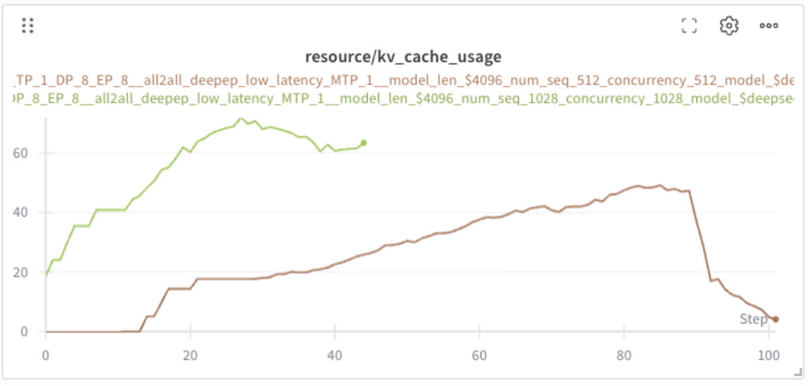
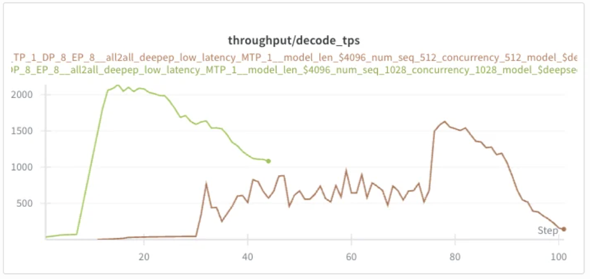
Encouraged by the headroom, I pushed concurrency further to 1200 (blue line). KV cache now saturates at 100%, and against expectation, throughput collapses:
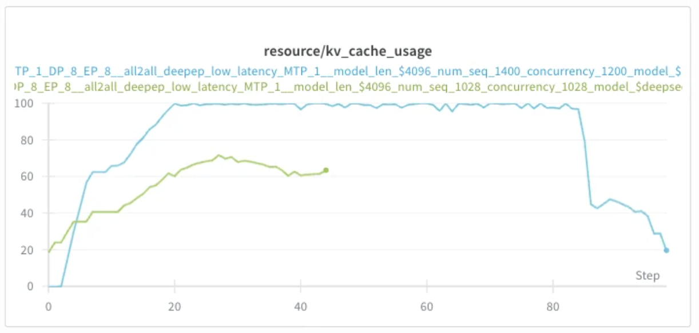
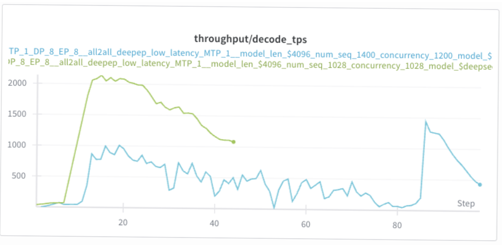
Preemption: what happens when the cache fills
The throughput collapse is due to preemption. When a new request arrives and there isn't enough KV cache memory for it, vLLM has to evict one or more running requests to make space. There are two eviction modes:
- Recompute: discard the preempted request's KV cache entirely. When it resumes, re-run prefill over the full context (original prompt plus generated tokens so far). Cheap in memory, expensive in compute.
- Swap: copy the preempted request's KV blocks out to CPU RAM and restore them later. Cheap in compute, expensive in PCIe bandwidth on swap-in/out.
Either way the cost is real: a request preempted once roughly doubles its end-to-end latency.
As such, one should be careful when tuning concurrency with kv cache. Two metrics to watch:
kv_cache_usage_pct— tells you the headroom you have.num_preemptions— tells you when you've crossed the line.
Second principle of throughput optimisation: push concurrency to fill up the KV cache, but stop before triggering preemption. The optimum sits just below 100% cache utilisation.
References
- Mastering LLM Techniques: Inference Optimization — NVIDIA Developer Blog
- Sarathi-Serve: Taming Throughput-Latency Tradeoff in LLM Inference — Agrawal et al., 2024
- vLLM documentation